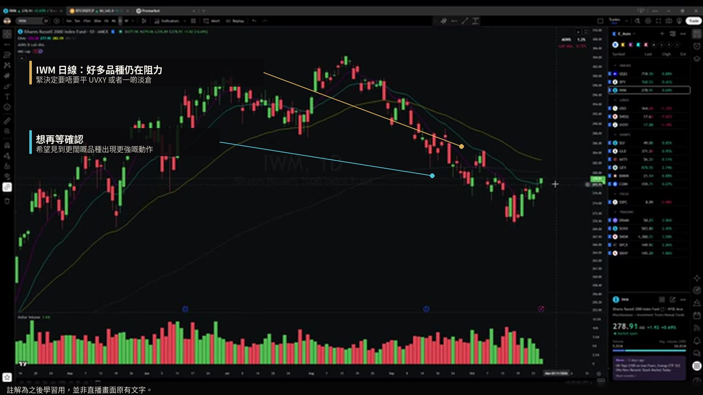
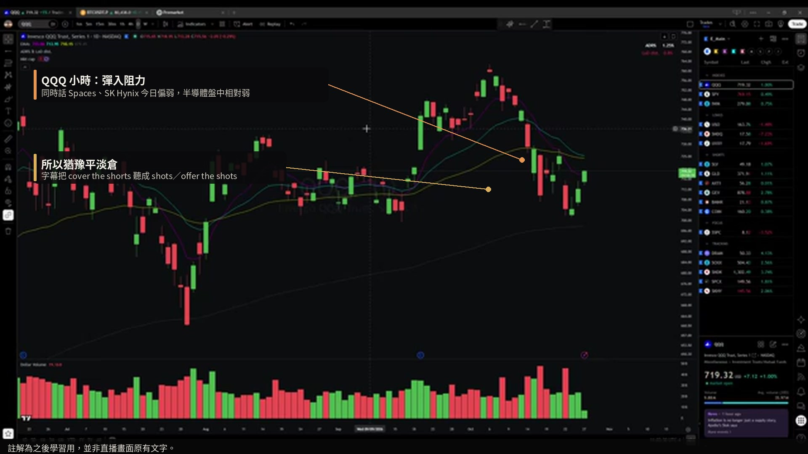

概要
阻力未破，所以未肯輕易平淡倉
1:37:57 佢話仍然喺度決定，要唔要平 UVXY，或者平一啲淡倉。但好多品種仍然在阻力，所以想再等一等，等見到更闊、更多品種出現更強嘅動作。之後又話自己曾想平一啲淡倉，但同時好多品種真係彈入阻力；今日 Spaces 偏弱，SK Hynix 都偏弱，半導體盤中亦相對弱，令佢猶豫平淡倉。
畫面見到 IWM 日線同 QQQ 小時圖。Whisper 把 SK Hynix 聽成 Esky Hynix，把 the semis 聽成 Themis，把 cover the shorts 聽成 offer the shots。呢段未單獨定影到 SK Hynix 本身。
圖一
IWM 日線：好多品種仍在阻力
直播 1:38:00

原話
I'm still deciding whether to close maybe like UVXY or like some of my shorts right now, but a lot of the names is still at the resistance level. I'm not sure, like I tend to wait for a little bit, like to wait for some confirmation, maybe seeing more, like stronger actions from a broader amount of names.
我仍然喺度決定，而家要唔要平 UVXY，或者平一啲淡倉。但好多品種仍然在阻力位置。我唔肯定，我傾向再等一等，等一啲確認，或者見到更闊、更多品種出現更強嘅動作。
點樣讀
平倉與否仍然未決，理由係阻力未破，同埋未見到夠闊嘅確認。
畫面 iShares Russell 2000 Index Fund 只當圖上文字。呢段未見到 UVXY 本圖，UVXY 只在口中出現。
圖二
QQQ 小時：彈入阻力
直播 1:43:40

原話
I was thinking to maybe close some of the shorts, but at the same time it's just a lot of the names is really bouncing into the resistance, and some of the Spaces is pretty weak today, SK Hynix is pretty weak today, the semis is also comparatively weak intraday. Yeah, I don't know, like it just made me hesitated to cover the shorts.
我有想過或者平一啲淡倉，但同時好多品種真係彈入阻力；而且有啲 Spaces 今日偏弱，SK Hynix 今日都偏弱，半導體盤中亦相對弱。係，我唔知，呢啲就令我猶豫平淡倉。
Whisper 把 SK Hynix 聽成 Esky Hynix，把 the semis 聽成 Themis，把 cover the shorts 聽成 offer the shots。Spaces 以口中為準；呢段畫面主要係 QQQ，未單獨定影 SK Hynix。
點樣讀
猶豫平倉嘅理由有兩邊：大市同好多品種仍在阻力，同時個別弱勢（Spaces、SK Hynix、半導體）又未叫佢放手。
附註
注意事項
- 1:38:30 前後亦掃過其他品種，例如 SATS、LITE，冇獨立分析點，唔另出圖。
- 口中 UVXY、SK Hynix、Spaces 喺呢段未全部定影；本頁唔補未見到嘅圖。